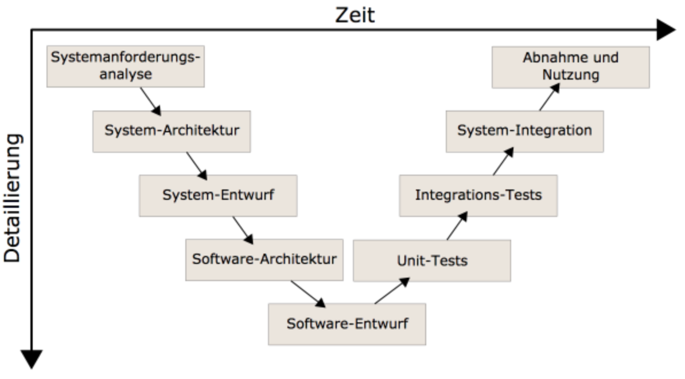
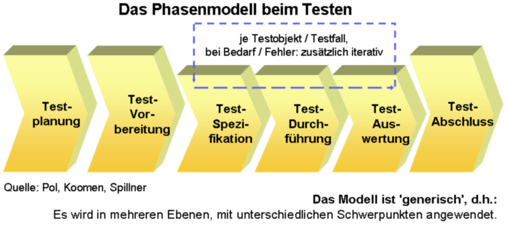

{% extends "../_base_template.html" %}
{% block title %}Lektion 15 - Software Testing{% endblock %}

{% block sections %}
<section data-markdown>
<textarea data-template>
<i class="fas fa-graduation-cap"></i> Software Testing
=============================

Ziel
-----

* Sie wissen, was „Software-Testing“ bedeutet
* Sie kennen verschiedene Test-Methoden
* Sie können Systemtests aus Use-Cases / Szenarien ableiten
</textarea>
</section>

<section>
<section data-markdown>
<textarea data-template>
<i class="fas fa-graduation-cap"></i> Software Testing
=============================

**Stichwortsammlung**:

### Warum testen wir Software / Was gibt es bei Software zu testen?
<br />
<br />
<br />

### Welche Test-Arten/Methoden kennen Sie?
</textarea>
</section>


<section data-markdown>
<textarea data-template>
<i class="fas fa-graduation-cap"></i> Software Testing
=============================

**Stichwortsammlung**:

### Warum testen wir Software / Was gibt es bei Software zu testen?

* Funktionalität
* Auftreten von Bugs
* Erfüllen von Spezifikationen
* Performance
* Sicherheit
* Usability / Accessibility
* gleichzeitige Zugriffe
* Kompatibilität
* Installation
* ... und noch viel viel mehr!

### Welche Test-Arten/Methoden kennen Sie?

* Debugging
* Unit-Tests
* Integrationstests
* Regressionstests
* Systemtests
* Schnittstellentests
* UI-Tests
* Web- resp. Browsertests
* ... und noch viele mehr!

<i class="fas fa-arrow-alt-circle-right"></i> **Software-Testing ist ein sehr weiter Begriff und wird ganz unterschiedlich interpretiert.**

englische Quelle zum Thema: https://de.wikipedia.org/wiki/Softwaretest

</textarea>
</section>
</section>

<section>
<section data-markdown>
<textarea data-template>
<i class="fas fa-graduation-cap"></i> Test-Methoden
=============================

<i class="fas fa-lock-open"></i> White-Box Testing
-------------------

* testet interne Strukturen oder Abläufe eines Programms
* Kenntnis des Programmcodes sind notwendig
* Der Tester definiert Input-Werte, um bestimmte Code-Pfade zu testen und mit dem erwarteten Output zu vergleichen.

Verwendung normalerweise bei:
* Unit-Tests
* Integrations-Tests (Zusammenführen von grösseren Code-Teilen)
* API-Tests
* Code-Coverage
* offene Penetration Tests (Angriffsversuche durch Code-Analyse)
</textarea>
</section>

<section data-markdown>
<textarea data-template>
<i class="fas fa-graduation-cap"></i> Test-Methoden
=============================

<i class="fas fa-lock"></i> Black-Box-Testing
-------------------

* testet die Software als „Black Box“, um die Funktionalität mit den Anforderungen zu vergleichen.
* es besteht kein Zugriff auf den Programmcode oder Wissen um die internen Strukturen
* Die Tester wissen nur, was „das Programm tun soll“
* „Test Cases“ beschreiben Input, Output und Vorgehen zum Testen.

Verwendung normalerweise bei:

* System-Tests
* Spezifikations-Tests
* User-Acceptance, Abnahme-Tests
* End-to-End-Tests (ganzes System bis und mit User-Interaktion)

<i class="fas fa-arrow-alt-circle-right"></i> **zu beiden Methoden gibt es sowohl manuelle wie auch automatisierte Test-Verfahren**

</textarea>
</section>
</section>

<section data-markdown>
<textarea data-template>
<i class="fas fa-graduation-cap"></i> Test-Methoden während der Software-Entwicklung
=============================

Jede Stufe der Software-Entwicklung erfordert eine andere Test-Methode.
Die entsprechende Entwicklungsstufe wird durch eine Test-Methode geprüft:


</textarea>
</section>


<section data-markdown>
<textarea data-template>
<i class="fas fa-graduation-cap"></i> Test-Phasen / Prozess
=============================

Das Testen von Software durchläuft mehrere Phasen, welche bei Bedarf auch iterativ (wiederholend) angewendet werden:



Definition / Inhalt der Phasen: siehe

**https://de.wikipedia.org/wiki/Softwaretest#Testplanung**
</textarea>
</section>

<section data-markdown>
<textarea data-template>
<i class="fas fa-graduation-cap"></i> Systemtest / Testfall erarbeiten
=============================

Wir erarbeiten **einen Testfall** für **manuelle Systemtests** am Beispiel BibSys:

* Grundlage für einen Testfall dient ein __Use-Case__, resp. ein bestimmtes __Szenario__ des Use-Cases.
* Der Testfall deckt das Szenario ab, und besteht aus einzelnern **Test-Schritten**.
* Das Szenario wird in einzelnen **Test-Schritten** beschrieben, durchgeführt und kontrolliert.
* Es wird unterschieden zwischen **„konstruktiven“** und **„destruktiven“** Testfällen:
  * konstruktive Tests decken das Szenario so ab, wie beschrieben.
  * destruktive Tests versuchen, anhand von Fehleingaben / Fehlverhalten das Szenario „zu sprengen“, resp. testen das Verhalten bei Fehleingaben / Störungen.
* Das Test-Protokoll eines Testfalles besteht aus einzeln durchzuführenden Schritten, mit folgenden Informationen:
  * Schritt-Nr.
  * Kurzbeschreibung/Titel
  * Vorbedingungen, Eingabeparameter (z.B. „als User X durchführen“)
  * genaue Beschreibung des Tests (Ablauf, auszuführende Schritte …)
  * erwartetes Ergebnis
  * tatsächliches Ergebnis

<i class="fas fa-arrow-alt-circle-right"></i> Erarbeiten Sie den Testfall für den Use Case **„Medium am Terminal ausleihen“**,
resp. das Szenario "Medium am Terminal ausleihen", vom 29. März 2018, auf Moodle [Beispiellösung Analyse-Sequenzdiagramm](https://moodle.bztf.ch/mod/resource/view.php?id=19563)

Als Vorlage dient Ihnen die [ Testfall-Vorlage ](https://moodle.bztf.ch/mod/resource/view.php?id=15222) auf Moodle.
</textarea>
</section>
{% endblock %}
